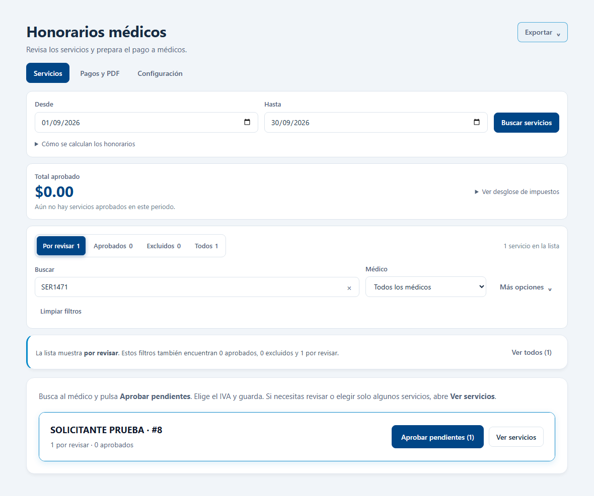
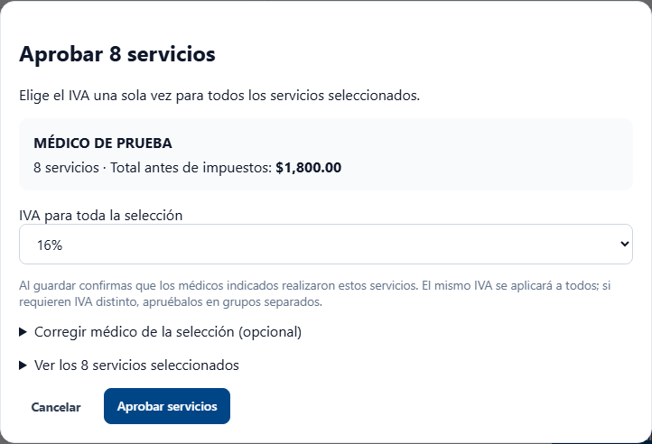
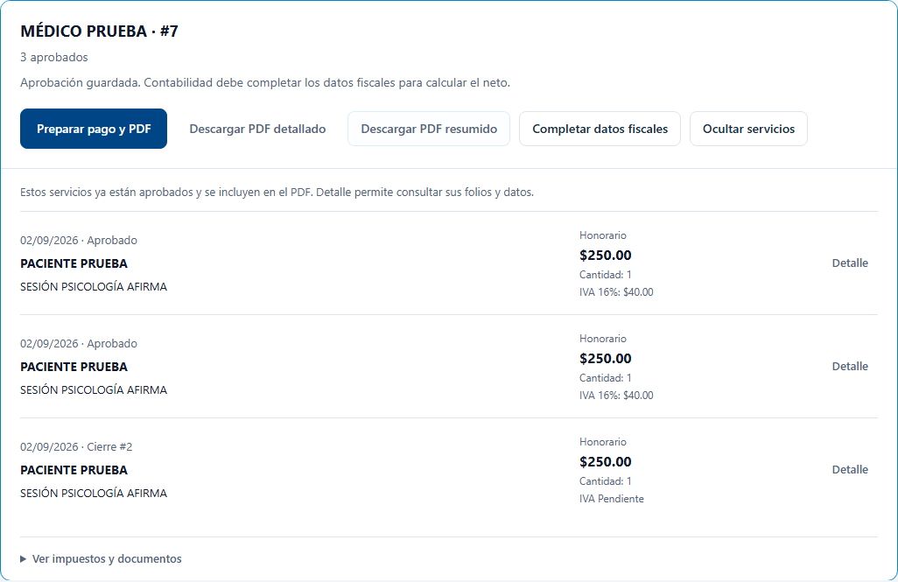
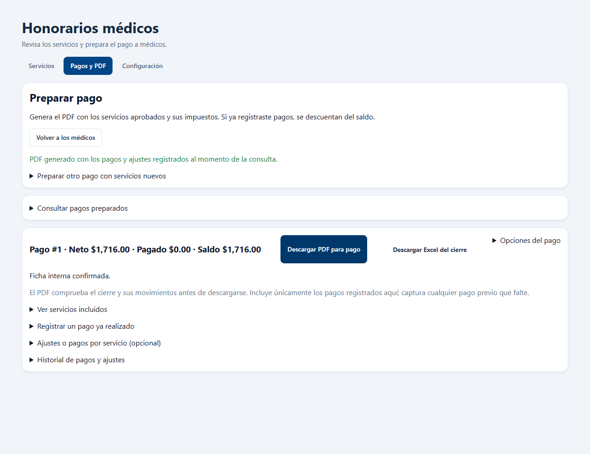
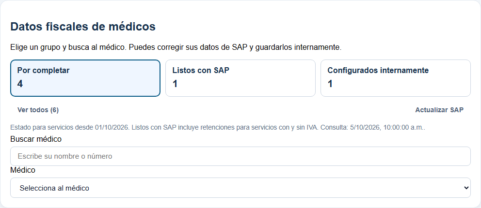
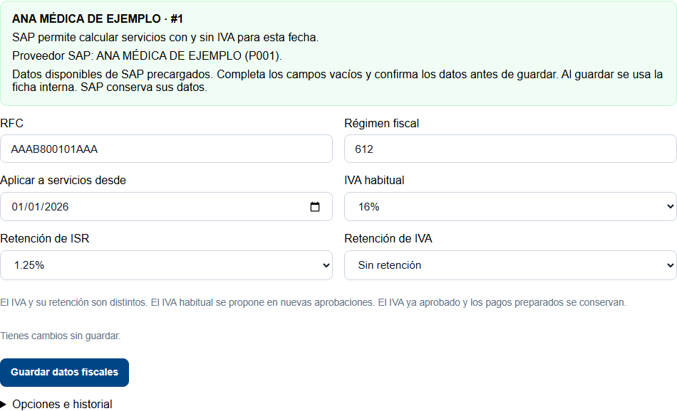
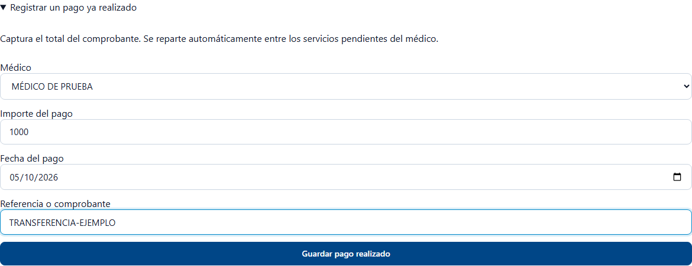
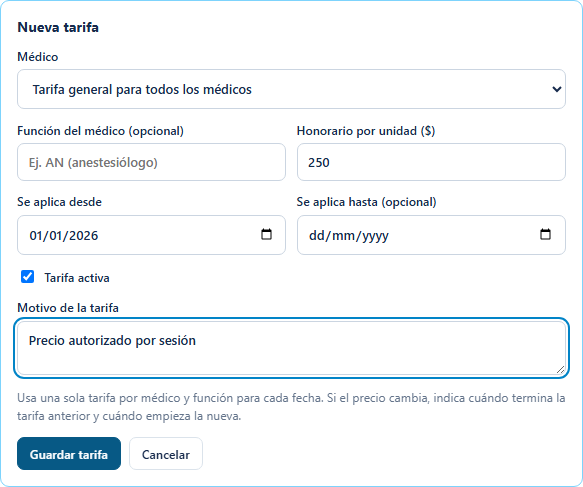

Honorarios médicos
Busca los servicios, apruébalos y prepara el PDF para pago.
Guía actualizada · 7 de octubre de 2026
El módulo tiene Servicios, Pagos y PDF y Configuración. Las capturas usan datos de ejemplo.
1. Busca los servicios
- Abre Servicios.
- Elige Desde y Hasta.
- Pulsa Buscar servicios.
- Busca al médico en Médico o escribe su nombre en Buscar.

Ya puedes revisar los servicios del médico.
2. Aprueba los servicios y confirma el IVA
- En la tarjeta del médico, pulsa Aprobar pendientes.
- Elige el IVA. Si aparece propuesto, comprueba que sea correcto.
- Pulsa Aprobar servicios.

Para aprobar solo algunos: abre Ver servicios, marca sus casillas y pulsa Aprobar seleccionados. Puedes aprobar hasta 100 a la vez.
Los servicios quedan guardados en Pagos y PDF.
3. Prepara el PDF para pagar
- Abre Pagos y PDF.
- En el médico, pulsa Preparar pago y PDF.
- Comprueba el médico y el periodo. Pulsa Generar PDF para pago.

Si faltan datos fiscales: el PDF se descarga con los servicios aprobados, sus importes y el IVA confirmado. Las retenciones y el neto desconocidos aparecen como pendientes, sin esperar a SAP. Puedes pulsar Completar datos fiscales después de descargar. Si el médico ya está configurado en SAP, abre Opciones del pago → Preparar pago con datos de SAP para conservar el neto y registrar sus pagos.

Con información fiscal completa, el PDF del pago preparado muestra sus honorarios, impuestos y saldo pendiente. Con información fiscal pendiente, el PDF muestra los servicios y datos disponibles. Generarlo no realiza una transferencia.
Datos fiscales: qué médicos están listos y cómo corregirlos
Abre Configuración → Datos fiscales. También puedes entrar desde Completar datos fiscales al preparar un pago.
- Por completar: necesitan revisar o completar su ficha. El aviso dice qué falta.
- Listos con SAP: SAP permite calcular servicios con y sin IVA para la fecha indicada.
- Configurados internamente: ya tienen una ficha interna lista para esa fecha.

Si SAP solo permite servicios sin IVA, el médico aparece en Por completar. No significa que su IVA sea cero: confirma la retención cuando el servicio tenga IVA.
Para completar o corregir una ficha
- Elige el grupo y selecciona al médico.
- Revisa los datos precargados de SAP o de su ficha interna.
- Copia el RFC y el código de tres dígitos del régimen fiscal de la constancia. Indica desde qué fecha se aplican.
- Confirma el IVA habitual, la retención de ISR y la retención de IVA con Contabilidad.
- Pulsa Guardar datos fiscales. Queda configurado internamente.

IVA y retención de IVA son distintos. Elegir IVA 16% añade ese impuesto al honorario. La retención se descuenta según la ficha fiscal.
SAP conserva sus datos. Tus correcciones se guardan en BI y se usan para calcular los servicios cubiertos por la vigencia. El IVA ya aprobado y los importes de pagos preparados se conservan.
Actualizar SAP vuelve a consultar sus datos y conserva tu captura. Si ya tienes una ficha, Copiar datos de SAP a la ficha permite recuperar sus valores; debes completar y guardar para aplicarlos.
Opciones e historial muestra quién cambió la ficha y cuándo. Puedes desactivar la ficha interna para volver a utilizar SAP cuando su configuración esté completa.
Mientras se prepara el PDF verás la etapa que se está consultando. Si la espera se detiene sin confirmar el resultado, pulsa Consultar pagos preparados para recuperar el pago existente. Si ya aparece el pago y falla la descarga, usa Descargar PDF para pago. Un aviso de que el pago no se creó permite volver a intentarlo.
Si ya se pagó: registra el comprobante
- En el pago preparado, abre Registrar un pago ya realizado.
- Captura el importe total, la fecha y la referencia del comprobante.
- Pulsa Guardar pago realizado.
- Descarga nuevamente el PDF para pago.

El pago registrado se descuenta del saldo del médico.
No captures dos veces el mismo comprobante. Los ajustes por servicio están en Ajustes o pagos por servicio (opcional).
Si falta un servicio o su tarifa
- Abre Configuración → Catálogo y precios.
- Busca el servicio y pulsa Configurar.
- Selecciona Incluir, revisa los datos y guarda.
- Agrega la tarifa autorizada y su fecha de vigencia.
- Regresa a Servicios para revisar las atenciones.
Los precios de referencia son una guía. Registra la tarifa autorizada para pagar al médico. Cuando el servicio está completo, aparece Configurados en verde; si falta tarifa, conserva el aviso pendiente. Configurar el servicio no aprueba automáticamente sus atenciones.
Para revisar meses anteriores, comprueba Se aplica desde y, si existe, Se aplica hasta de la tarifa. Una tarifa que comienza en octubre no cubre las atenciones de agosto, aunque el servicio aparezca Configurados. Edita la vigencia sólo desde la fecha en que se autorizó ese importe, conserva los períodos con precios distintos y vuelve a buscar el mes en Servicios.

Respuestas rápidas
- Puse IVA 16% y aparece pendiente: verifica si lo pendiente es la retención de IVA. Completa la ficha fiscal.
- Ya aprobé y no veo los servicios: abre Pagos y PDF con el mismo periodo y filtros.
- El PDF no se genera: revisa el aviso; una atención o tarifa modificada necesita nueva revisión. La falta de datos fiscales permite descargar el PDF con los datos disponibles.
- Necesito Excel: usa Exportar → Descargar Excel. Respeta los filtros de la pantalla.
- Sin IVA: elige esa opción únicamente cuando esté confirmado.